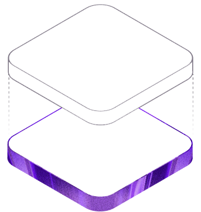

BUT 1 · Fondamentaux
Programmation Java et Python, algorithmique, SQL, conception objet, interfaces Java et premières architectures réseaux.
BUT Informatique · Déploiement d’applications communicantes et sécurisées
Administration Linux, réseaux, conteneurs, CI/CD et automatisation : je construis des environnements fiables et maintenables. Le développement me sert à relier les services et à répondre aux besoins du terrain.
Mon parcours à l’IUT de Vannes est orienté vers le déploiement d’applications communicantes et sécurisées : administration Linux, réseaux segmentés, virtualisation, conteneurs et automatisation.
J’aime comprendre toute la chaîne qui permet à un service de fonctionner, de l’application jusqu’au système qui l’héberge. En alternance, j’ai aussi développé mon autonomie, ma capacité d’analyse et mon attention à la performance et à la sécurité. Consulter l’analyse détaillée de mes compétences.
Programmation Java et Python, algorithmique, SQL, conception objet, interfaces Java et premières architectures réseaux.
React, TypeScript, Express, Spring Boot, MongoDB, Docker, CI/CD, administration Linux, sécurité, virtualisation et premières missions en alternance.
Microservices, API, réseaux segmentés, VPN, LDAP, Samba, automatisation avec Ansible et intégration continue avec Jenkins.
Compréhension de l’environnement existant, choix techniques adaptés, documentation et attention portée à la maintenabilité des solutions.
Optimisation des traitements, limitation des échanges inutiles, externalisation des secrets et gestion rigoureuse des droits utilisateurs.
Adaptation aux modèles de données de l’entreprise, validation du schéma avec Hibernate et restitution claire par listes, interfaces et graphiques.
Applications connectées aux bases et services externes, serveurs virtualisés, Linux, réseaux, conteneurs et sécurisation.
Segmentation réseau, pare-feu, VPN, gestion des droits, externalisation des secrets et hachage des mots de passe.
Docker, GitLab CI/CD, Jenkins et Ansible pour reproduire les environnements, contrôler les étapes et faciliter la maintenance.
Journaux, métriques, tableaux de bord et vérifications techniques pour diagnostiquer les incidents et suivre le fonctionnement d’une plateforme.
API, scripts et applications permettant d’intégrer les services, d’automatiser les tâches et de valider les architectures.
Formalisation des besoins, étude de faisabilité, rôles, jalons, réunions et suivi des tâches avec les issues GitLab.
Des réalisations choisies pour montrer ma progression en infrastructure, sécurisation, déploiement et intégration de services.
Mise en place d’architectures segmentées sous Linux avec routeur, pare-feu, LAN et DMZ. Configuration de nftables, WireGuard, Samba et LDAP, complétée par des travaux d’automatisation Ansible/Jenkins et des API conteneurisées.

Une plateforme de challenges déployée avec Docker et GitLab CI/CD. Elle réunit un frontend React, une API Express, une base MySQL et une supervision Prometheus/Grafana, avec authentification, gestion des droits, classement et collections.
Un service Spring Boot structuré en modules et prêt à être intégré dans un environnement applicatif. Il gère les utilisateurs et les groupes avec validation, documentation OpenAPI, authentification HTTP Basic et mots de passe hachés avec BCrypt.
Une application de gestion des secouristes, sites et événements sportifs. L’architecture sépare interface, services métier, DAO et base SQL, avec opérations CRUD, modèle relationnel et documentation technique.

Une application locale pour apprendre et expérimenter les requêtes MongoDB. Elle propose des parcours de quiz, l’exécution contrôlée d’opérations, l’exploration des schémas, l’import et l’export JSON/BSON ainsi que des sauvegardes locales.
Mes dépôts publics les plus récemment mis à jour.
Chargement des projets publics…
Une idée à partager ?
Une alternance, un projet ou simplement envie d’échanger autour des systèmes, des réseaux, de la sécurité et du déploiement ? Retrouvez-moi sur GitHub.